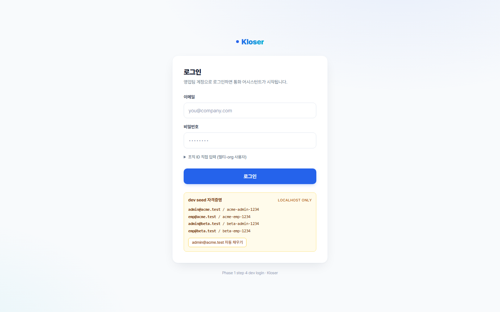
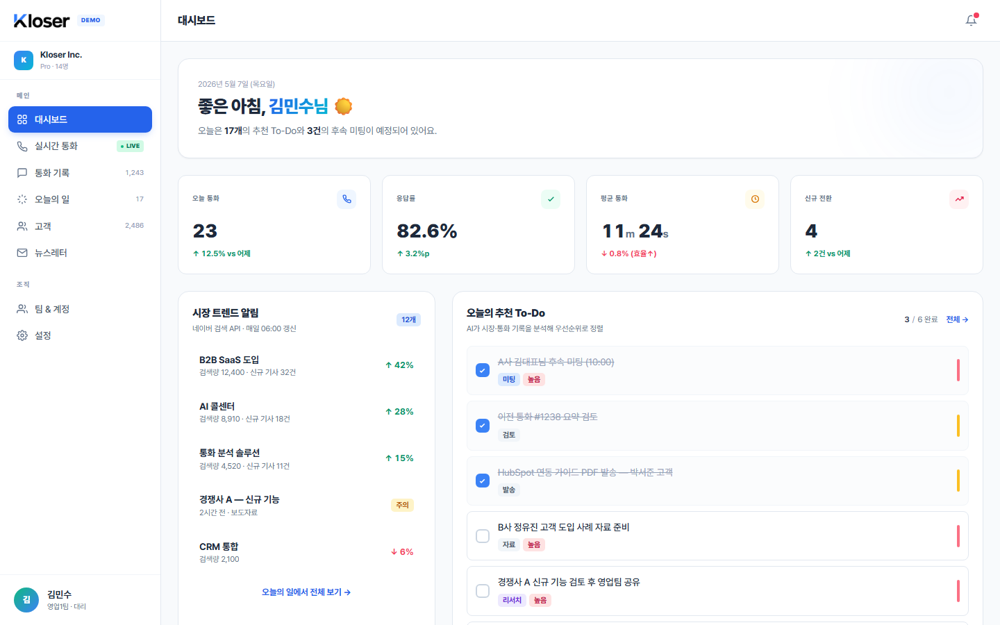
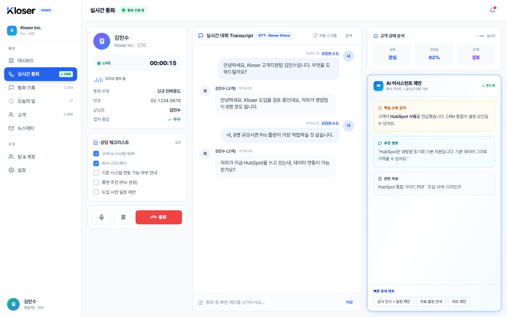
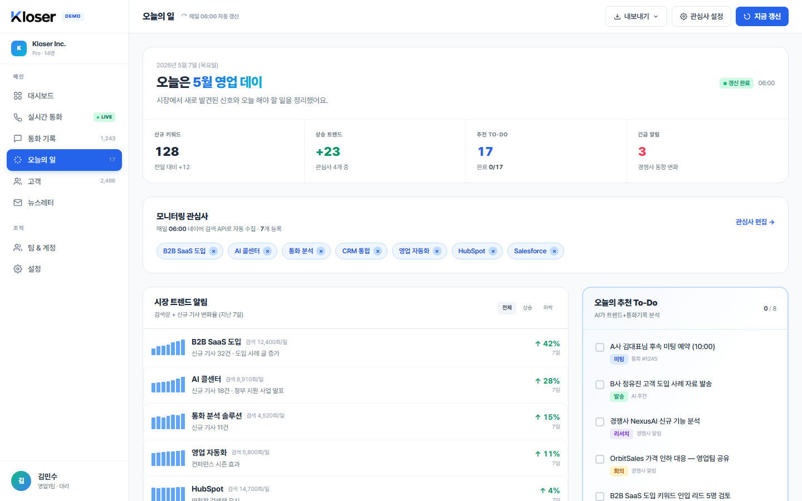
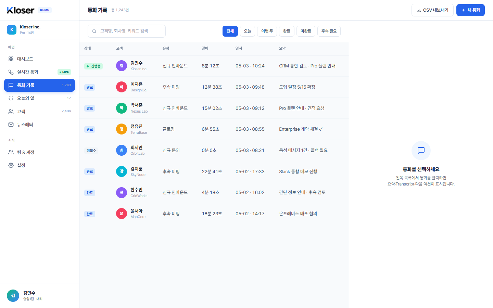
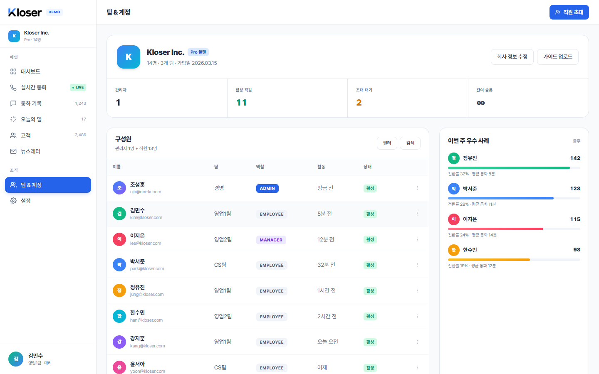
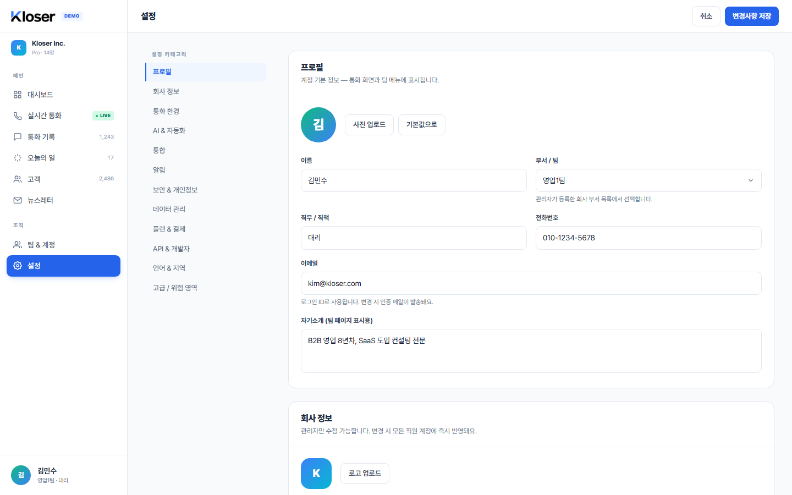

로그인 + 2단계 인증
영업팀 계정으로 로그인하면 통화 어시스턴트로 진입합니다. 멀티 조직 사용자는 로그인 시 조직 선택 안내가 자동으로 노출됩니다. Phase 7부터는 비밀번호 직후 인증기 앱의 6자리 코드를 한 번 더 입력하는 2단계 인증 단계가 추가됩니다 (사용자 선택, 관리자가 조직 단위로 강제화 가능).

- 이메일 + 비밀번호 로그인 (Argon2id 해시)
- HttpOnly refresh cookie 30일 + Bearer access 15분 갱신
- 잘못된 자격증명·다중 조직 시 인라인 안내 메시지
- localhost 접속 시 dev 시드 4쌍 + 자동 채우기 버튼 노출
- 회원가입 UI + 30분 이메일 인증 + 메일 링크 비밀번호 재설정 (Phase 3)
- 멀티-조직 계정은 1차 로그인 실패 응답에 organization 리스트가 포함되어 조직 ID 입력 안내 노출
- 2단계 인증(TOTP) — Phase 7 Step 2: 인증기 앱(Google Authenticator 등)으로 QR 스캔 후 6자리 코드 등록. 비밀번호 다음 단계로 자연스럽게 연결
- 조직 전체 MFA 강제화 — Phase 7 Step 2: 관리자가 토글하면 멤버 전원이 다음 로그인부터 MFA 등록 필수
- 회원가입·재설정 이메일은 운영 모드(`EMAIL_PROVIDER=resend`)에서 Resend로 실제 발송 (Phase 7 Step 1). dev/e2e는 outbox 모드 그대로
- SSO / SAML — Enterprise 단계 (별도 Phase)
- WebAuthn 패스키 — Phase 7은 TOTP까지 도입, 패스키는 후속
- 실 Resend 도메인 smoke 검증 — staging 운영 시점에 한 번 직접 수행 (현재 fake adapter 테스트로 검증)
대시보드 — 하루의 시작
로그인 직후 마주하는 메인 화면. 4종 KPI, 시장 트렌드 알림, AI가 생성한 오늘의 To-Do를 한눈에. 어디서부터 시작할지가 자명해집니다.

- 오늘 통화 / 응답률 / 평균 통화 길이 / 진행 중인 통화 — 4개 KPI가 본인 회사 데이터로 채워집니다 (Phase 4 `/dashboard/summary` 실 API).
- 최근 통화 5건이 종료된 시각 순으로 같이 보입니다.
- 인사말에 본인 이름이 표시되고, 이메일 인증을 아직 안 했다면 상단에 안내 띠가 뜹니다.
- 알림 패널 · 토스트 · 모달 인터랙션, 사이드바 드로어 전환(좁은 화면)이 정상 동작합니다.
- 평균 통화 길이 표시 안전성 — Phase 7 Step 8: 값을 텍스트로만 렌더해 화면이 깨지거나 코드가 실행되는 일이 없습니다.
- demo 영역에 정직 라벨 — Phase 7 Step 8: 시장 트렌드 / 추천 To-Do / 팀 활동 피드는 demo 데이터임을 카드 헤더에 명시.
- 사이드바 권한 정돈 — Phase 7 Step 6: 조회 권한 사용자에게는 admin 전용 메뉴(팀 보고서 등)가 사이드바에서 숨겨집니다.
- 시장 트렌드 알림 5건 — 네이버 검색 API 연동 (별도 Phase, 현재 demo + 정직 라벨)
- 오늘의 추천 To-Do 실 엔진 (별도 Phase, 현재 demo)
- 팀 활동 피드 — 운영 admin은 설정 → 감사 로그 패널에서 별도로 조회 (Phase 7 Step 3). dashboard의 팀 활동 위젯에는 직접 노출하지 않음 (보안 정책)
실시간 통화 — 핵심 기능
Kloser의 핵심 통화 화면입니다. Phase 5부터는 실 STT(네이버 클로바)·LLM(Claude)·벡터 검색(pgvector)이 끼워졌고, Phase 6에서는 통화 중 실시간 AI 추천 카드가 그 통화의 이력으로도 저장됩니다. 통화 종료 시 자동 요약·고객 니즈·미해결 이슈가 백그라운드에서 자동으로 채워집니다.

- 로그인한 사용자만 통화 화면에 들어갈 수 있습니다 (WebSocket 인증 핸드셰이크).
- 실 STT — Phase 5: 네이버 클로바가 발화를 받아 적어 transcript 영역에 흘립니다 (provider env 명시 시).
- 실 LLM 응대 추천 — Phase 5·6: Claude가 가격/일정/이슈 흐름을 보고 추천 멘트·주의 사항 카드를 띄웁니다. 카드는 떴다가 다음 추천으로 갱신되어도 그 통화의 추천 이력에 저장됩니다.
- 회사 가이드 RAG — Phase 5: pgvector로 회사 표준 응대 가이드/FAQ를 벡터 검색해 추천에 반영합니다.
- 통화 종료 → AI 자동 요약 — Phase 6: 종료 버튼 직후 백그라운드 워커가 transcript를 읽고 요약·고객 니즈·미해결 이슈·감정을 자동으로 채워 둡니다. 사람이 직접 적은 메모는 자동화가 덮어쓰지 않습니다.
- 끊긴 통화 자동 정리 — Phase 6: 브라우저가 꺼져 살아 있음 신호가 60초 이상 끊기면 자동으로 "끊김(서버 타임아웃)"으로 마감.
- 통화 수 한도 — Phase 7 Step 9: 현재 플랜의 이번 달 통화 한도를 넘으면 시작 시도가 "플랜 한도 초과"로 막힙니다.
- 실 음성 캡처(Windows 데스크톱 앱) — 별도 트랙
- 녹음 파일 저장 + 재생 — Phase 8 (call recording)
- 다국어 transcript — 별도 Phase
오늘의 일 — 시장 트렌드 + To-Do
오늘 확인할 시장 이슈와 To-Do를 한 화면에서 보는 데모 화면입니다. Phase 7 Step 8부터는 카피가 "매일 06:00 자동 갱신" → "데모 데이터 (자동 갱신 backend 미연결)"로 정직하게 바뀌었고, 사용자가 입력한 키워드/경쟁사 텍스트로 화면이 깨지는 보안 구멍이 닫혔습니다. 회의 자료 5포맷 다운로드는 실작동합니다.

- 모니터링 관심사 chip 추가·삭제 · To-Do 체크박스 토글
- 5 포맷 다운로드 실작동 — jsPDF / html-docx-js / SheetJS / PptxGenJS
- Excel은 5개 시트 자동 분리 (요약·트렌드·주간·To-Do·경쟁사)
- PowerPoint는 6장 자동 구성 (표지·KPI·트렌드·To-Do·경쟁사·마무리)
- demo 정직성 — Phase 7 Step 8: "데모 새로고침" 버튼 + 카피 정리. backend 자동 갱신이 없다는 사실을 화면에서 숨기지 않습니다.
- 사용자 입력 XSS 차단 — Phase 7 Step 8: 키워드·경쟁사 chip / 다운로드 출력에 사용자 텍스트가 들어가도 화면이 깨지거나 코드가 실행되는 일이 없습니다.
- 실 네이버 검색 API 호출 — 별도 Phase
- 실 To-Do 생성 엔진 (시장 + 통화 결합) — 별도 Phase
- To-Do 우선순위 자동 정렬 모델 — 별도 Phase
통화 기록 — 검색 가능한 과거
지난 통화 전부가 검색·필터 가능한 상태로 보존됩니다. 클릭하면 우측에 상세 패널이 슬라이드되어 transcript · 요약 · 다음 액션을 확인.

- 실시간 통화에서 종료한 통화가 통화 기록에 그대로 남습니다.
- 통화 기록 화면에서 검색어와 상태 필터로 통화를 찾을 수 있습니다.
- 목록에서 통화를 클릭하면 오른쪽 상세 패널에서 메모·대화 내용·액션 아이템을 한 번에 볼 수 있습니다.
- 다른 회사의 통화 기록은 보이지 않습니다 (회사 단위 분리).
- 대시보드의 최근 통화에도 종료된 통화가 반영됩니다.
- 통화 후 AI 자동 요약 — Phase 6: 요약·고객 니즈·미해결 이슈·감정이 백그라운드에서 자동으로 채워집니다. 사람이 직접 적은 메모는 보호됩니다.
- 실시간 추천 카드 이력 — Phase 5·6: 통화 중 떴던 추천 카드가 그 통화의 추천 이력으로 같이 저장되어 상세 패널에서 다시 볼 수 있습니다.
- 다음 액션 ✕ 삭제 — Phase 6: 잘못 만든 액션 아이템을 행 끝의 ✕ 버튼으로 즉시 삭제. 권한 매트릭스는 메모/노트와 동일.
- 고객 ↔ 통화 연결 — Phase 5: 통화 상세에서 고객을 선택해 묶으면 그 고객의 마지막 연락 시점이 자동 갱신됩니다.
- 감사 추적 — Phase 7 Step 3: 통화 생성 / 메모 수동 입력 / 액션 아이템 삭제 / 요약 수동 입력이 모두 감사 로그에 행으로 남습니다 (admin 패널에서 조회).
- 녹음 파일 저장 + 재생 — Phase 8 (call recording)
- CSV 내보내기 — 별도 Phase
- 대화 내용 전체 본문 검색 — 별도 Phase
고객 관리 — 통합 CRM
영업팀의 고객 마스터. 활성·검토중·대기 상태별 필터, 이름·회사·이메일 검색, 마지막 연락 시점까지 한 화면에. Phase 2에서 실 API CRUD로 전환 완료 — 추가·수정·삭제가 영속 저장되고 조직별 격리(RLS)로 다른 회사 고객은 보이지 않습니다.

- 실 API CRUD — 추가/수정/삭제 모두 영속 저장 (`/customers` 6 endpoints)
- 4 KPI (전체/활성/검토중/대기) — 조직 전체 기준 자동 갱신
- 2 그룹 chip 필터 (status / sort) + 이름·회사·이메일 검색
- URL query string 동기화 — 새로고침·뒤로 가기·북마크 복원
- 듀얼 모드 모달 (신규 + 수정 + 삭제) · 24명 seed (Acme 12 / Beta 12)
- 조직별 격리 — DB RLS로 다른 회사 고객 비노출, viewer 쓰기 403
- 입력 검증 (zod 서버 + JSDoc 화면) · soft delete (보존)
- 자동 회귀 — `phase_2_customers_e2e` 7 시나리오 + cleanup sweep
- 매니저 팀 단위 권한 — Phase 5: 매니저는 본인 팀 고객만 mutation 가능. employee는 본인 통화에 묶인 고객 위주.
- 통화 자동 last_contacted_at — Phase 4·5: 통화 종료 + 고객 연결 시 그 고객의 마지막 연락 시점이 자동 갱신.
- 고객사 한도 — Phase 7 Step 9: 현재 플랜의 고객사 한도를 넘으면 추가 등록이 "플랜 한도 초과"로 막힙니다.
- 감사 추적 — Phase 7 Step 3: 고객 생성/수정/삭제가 모두 audit row로 남습니다. 값(이름/이메일 등)은 기록 안 함 — 어떤 필드가 바뀌었는지만.
- CSV 일괄 가져오기 — 별도 Phase
- HubSpot / Salesforce 양방향 동기화 — v2 베타
- 고급 검색 (오타 허용·전문 검색) — 별도 Phase
- 삭제 고객 복원 UI — 운영 admin 콘솔 (별도)
팀 & 계정 — 권한 매트릭스
관리자 1개 + 직원 서브 계정 (Pro 1명 / Enterprise 5명). 권한은 Admin · Manager · Employee · Viewer 4단계, 우수 사례 자동 노출로 팀 내 베스트 프랙티스를 즉시 공유.

- 구성원 목록 + 권한 매트릭스 UI (실 /team/members API)
- 직원 초대 모달 — Phase 3에서 실 API로 wiring (보내기·다시 보내기·취소 + 익명 수락 페이지)
- 서버 측 role guard — admin / manager / employee / viewer 4단계 미들웨어 동작 + 마지막 admin 보호 + requireFreshRole로 stale role 차단
- 초대 토큰 발급·소비 (sha256 해시 저장, 7일 TTL)
- 실 이메일 발송 — Phase 7 Step 1: 운영 모드(`EMAIL_PROVIDER=resend`)에서는 초대 메일이 받은편지함에 실제로 도착합니다. dev/e2e는 outbox 테이블 모드 그대로.
- 좌석 한도 — Phase 7 Step 9: 현재 플랜의 좌석 한도(starter 2 / pro 10 / enterprise 무제한)를 넘는 초대 발송이 "플랜 한도 초과"로 막힙니다. 좌석 = 활성 멤버 + 대기 중 초대.
- 감사 추적 — Phase 7 Step 3: 초대 생성/재발송/취소/수락, 멤버 역할·상태 변경이 모두 감사 로그에 행으로 남습니다.
- 팀 CRUD UI (팀 생성·수정·삭제) — 별도 Phase. 현재는 초대 모달의 팀 드롭다운만 `GET /teams` 사용
- 우수 사례 자동 추출 엔진 — 별도 Phase
- SSO / SAML 멤버 프로비저닝 — Enterprise 단계 (별도 Phase)
팀 보고서 — 기간 + 담당자 drilldown
매니저가 본인 팀 통화의 KPI를 분리해 볼 수 있는 화면입니다 (사이드바 "보고서"). Phase 6에서 도입됐고, Phase 7 Step 7에서 기간 preset(7/30/90/직접)과 담당자별 drilldown이 추가됐습니다. admin은 본인 조직 전체 또는 임의 팀을 볼 수 있고, 매니저는 본인 팀만, employee/viewer는 사이드바에서 항목 자체가 숨겨집니다.
화면 구성
- 상단: 기간 preset 칩 (7일 / 30일 / 90일 / 직접 선택). 직접 선택 시 from/to 날짜 입력.
- 가운데: 6 KPI 카드 — 총 통화 / 완료 / 미수신 / 끊김 / 응답률 / 평균 통화 시간.
- 오른쪽 상단: 담당자 요약 표 — 담당자별 통화 수 / 응답률 / 평균 시간. 행을 클릭하면 아래 최근 통화 10건이 그 담당자의 통화로 필터됩니다.
- 하단: 최근 통화 10건 (필터 적용된 상태).
- admin이 조직 전체 범위에서 볼 때만 "미배정 (담당자 없음)" 버킷이 표시됩니다.
- 매니저 팀 단위 KPI — Phase 6: 매니저는 본인 팀의 통화만, admin은 본인 조직 전체 또는 임의 팀.
- 기간 preset 7/30/90/직접 — Phase 7 Step 7: 기본값은 최근 30일. 한 값만 입력하면 400 (one-sided), 366일 초과도 400.
- 담당자별 drilldown — Phase 7 Step 7: 담당자 행 클릭으로 최근 통화 10건 필터링. 미배정 버킷은 admin 조직 범위에서만.
- 감사 추적 — Phase 7 Step 3: 보고서 조회마다 `from`/`to`/`window_days`가 감사 로그에 기록됩니다 (결과 자체는 기록 안 함).
- role-based 사이드바 — Phase 7 Step 6: employee/viewer에게는 사이드바에서 보고서 항목이 숨겨집니다. URL 직접 접근은 backend가 별도로 403.
- 주간/월간 막대 차트 — 별도 Phase (현재는 숫자 KPI만)
- CSV / PDF 내보내기 — 별도 Phase
- 담당자별 우수 사례 자동 표시 — 별도 Phase
플랜 & 사용량 — 한도와 청구 정보
관리자가 설정 → 플랜 & 사용량 카드에서 현재 플랜의 6가지 한도 진행률과 청구 정보를 직접 봅니다 (Phase 7 Step 9). 한도가 차면 좌석/고객/지식/통화 5종은 서버에서 차단되고, 비관리자는 정적 "권한 없음" 안내만 봅니다.
플랜별 한도 (요약)
| 항목 | starter | pro | enterprise | 강제 |
|---|---|---|---|---|
| 구성원 좌석 | 2 | 10 | 무제한 | hard |
| 고객사 | 100 | 1,000 | 무제한 | hard |
| 지식베이스 | 3 | 50 | 무제한 | hard |
| 지식 청크 | 500 | 10,000 | 무제한 | hard |
| 이번 달 통화 | 100 | 5,000 | 무제한 | hard |
| 이번 달 AI 비용 | $5 | $100 | 무제한 | soft (참고용) |
- 관리자만 보임 — `requireRole("admin") + requireFreshRole`. 비관리자는 정적 "권한 없음" 안내, JS 예외 없음.
- 6개 한도 progress bar (사용 / 한도 / 진행률). 80% 이상은 amber, 초과는 rose 색상.
- 청구 정보 form — 사업자등록번호(64자 이내) + 세금계산서 이메일. 빈 입력은 null로 정리.
- 한도 초과 시 좌석/고객/지식/통화 5종 mutation이 서버에서 403 `plan_limit_exceeded`로 차단. WebSocket 통화 시작도 같은 구조의 ack로 거부.
- 외부 결제 시스템 ID는 응답에 노출되지 않고, `external_provider_configured` boolean만 표시. 청구 정보 변경 audit row는 "어떤 필드가 바뀌었는지"만 기록(값 미포함).
- 모든 서버 값은 textContent / input.value로만 주입 — 사업자등록번호에 스크립트 페이로드를 저장해도 텍스트로만 보임.
- 실 결제 provider 연동(Stripe / Toss) — 별도 Phase. 외부 돈 이동/회계 계약 동반
- 플랜 변경 / 결제 수단 / 영수증 PDF — 결제 provider 연동 시점에 같이
- AI 비용 hard cap 전환 — 후속 step (현재는 표시만, mutation은 막지 않음)
설정 · 감사 로그
12개 카테고리 + 좌측 스크롤스파이 TOC. Phase 7부터는 보안 카드에 2단계 인증 등록/해제·조직 강제화 토글이 들어왔고, 카드 하단에 admin 전용 감사 로그 패널(최근 200건, cursor pagination)이 추가됐습니다. 플랜 카드는 위 §10 화면이 됩니다.

- 12 카테고리 + 좌측 스크롤스파이 TOC — 보고 있는 섹션 자동 강조
- 2단계 인증 등록/해제 — Phase 7 Step 2: 현재 비밀번호 확인 → QR + 6자리 코드 → 등록 완료. 해제도 같은 흐름. 5분짜리 일회용 토큰으로 가로채기 차단.
- 조직 전체 MFA 강제화 토글 — Phase 7 Step 2: admin이 켜면 멤버 전원이 다음 로그인부터 MFA 등록 필수.
- 감사 로그 패널 — Phase 7 Step 3: admin 전용. 보안·멤버십·초대·고객·통화·지식·보고서·청구 8개 영역의 행위를 시간 역순 200건까지 표시 (cursor pagination + cross-org isolation). 모든 값은 textContent로 렌더 — XSS 안전.
- 활성 세션 / 디바이스 표시 — Phase 7 Step 2: 본인 활성 세션을 보고 강제 로그아웃할 수 있습니다.
- 플랜 & 사용량 카드 (§10): 같은 페이지의 별도 섹션. 6가지 한도 진행률 + 청구 정보.
- WebAuthn 패스키 — Phase 7은 TOTP까지
- API 키 발급 / webhook 콘솔 — 별도 Phase
- 회사 정보 / 통화환경 / 알림 등 일부 카테고리의 항목 저장 — 해당 기능 구현 시점에 같이 (현재 일부는 demo)
- SSO / SAML — Enterprise 단계 (별도 Phase)
Phase 1~7 종합 정리
지금 시점에서 무엇이 진짜로 동작하고 무엇이 별도 Phase로 분리됐는지 한 표로 정리. Phase 1 인프라(인증·격리·세션·실시간) + Phase 2 고객 CRUD + Phase 3 셀프서비스(가입·인증·복구·초대) + Phase 4 통화 영속화 + Phase 5 지식베이스·체크리스트·실 STT/LLM + Phase 6 자동 요약·끊긴 통화 정리·매니저 보고서 + Phase 7 운영 게이트(실 이메일·MFA·감사·보존·플랜 caps)까지 완료된 상태.
| 영역 | 현재 (Phase 1~7) | 별도 Phase |
|---|---|---|
| 데이터 영속 | PostgreSQL 16 + FORCE RLS default-deny — customers / calls / transcripts / action_items / knowledge_bases (pgvector) / call_checklist / suggestions / llm_usage_log / activity_log / email_outbox / organization_billing_profiles 모두 같은 패턴 | Phase 8 — call_recordings + S3/MinIO |
| 고객 관리 (CRM) | 실 API CRUD + 4 KPI + URL 동기화 + soft delete + Phase 7 Step 9 고객사 한도 + 통화 종료 시 last_contacted_at 자동 갱신 + 매니저 팀 단위 권한 분기 | CSV 가져오기 · HubSpot/Salesforce 양방향 · 본문 검색 |
| 인증 / 셀프서비스 / MFA | Argon2id + JWT + refresh rotation + role guard + 자가 회원가입 / 이메일 인증 / 비밀번호 재설정 / 동료 초대 / 마지막 admin 보호 / requireVerified. Phase 7 Step 2 — TOTP MFA 등록·해제·조직 강제화. Step 1 — Resend 실 발송 | WebAuthn 패스키 · SSO/SAML (Enterprise) |
| 조직별 격리 (RLS) | DB 차원 강제 — Phase 1~7의 모든 org-scoped 테이블이 FORCE RLS + composite FK + withOrgContext로 통일 |
새 entity 추가 시 같은 패턴 |
| 통화 어시스턴트 | WebSocket 인증 핸드셰이크 + start/text/end_call 영속화. Phase 5 — 실 STT(Clova) + LLM(Claude) + RAG(pgvector). Phase 6 — 자동 요약·끊긴 통화 sweep·suggestion 이력. Phase 7 Step 9 — 이번 달 통화 한도 강제 |
Phase 8 — 녹음 파일 + 재생 |
| 대시보드 / 보고서 / KPI | `/dashboard/summary` 실 API + 4 KPI + 최근 통화 5건. Phase 6·7 — 매니저 팀 보고서(`/reports/team-summary`) + 기간 preset(7/30/90/직접) + 담당자별 drilldown + unassigned 버킷 | 주간/월간 차트 · CSV/PDF 내보내기 |
| 감사 / 보존 | Phase 7 Step 3 — `activity_log` + admin 전용 `GET /activity-log` + cursor pagination + cross-org 격리 + payload는 필드 이름만(값 미포함). Step 4 — transcripts 3년 hard delete + email_outbox 회복 cron(`KLOSER_RETENTION_ENABLED` gate) | Phase 8에서 녹음 90일 정책 추가 |
| 플랜 / 사용량 | Phase 7 Step 9 — `organizations.plan` CHECK(starter/pro/enterprise) + `BILLING_PLAN_LIMITS` 6종(좌석·고객·KB·청크·통화 hard, AI 비용 soft) + `assertPlanAllows` race-safe 강제 + `GET /billing/overview` admin 전용 + 청구 정보 PATCH | 결제 provider(Stripe/Toss) — 별도 Phase |
| 팀 / 권한 | role 미들웨어 4단계(admin/manager/employee/viewer) + 초대/수락/멤버 변경/마지막 admin 보호 + employee 본인 통화 mutation + manager team-scope (Phase 5). Phase 7 Step 6 — 사이드바 role-based 가시성. Step 9 — 좌석 한도 | 팀 CRUD UI · 우수 사례 자동 추출 |
| AI 비용 추적 | Phase 7 Step 5 — `llm_usage_log.cost_usd_micros` 모델별 가격 매핑 (Anthropic Sonnet/Opus/Haiku + OpenAI text-embedding) + adapter boundary 자동 계산 + unknown/missing/Clova STT는 NULL + cost_status 마커 | AI 비용 hard cap 전환 |
| 자동 회귀 | 서버 769/772 PASS (3 skipped) + sync 21 entity + Phase 0.5/2/3/4/5/6 e2e + Phase 7 단위 회귀(MFA·activity_log·retention·LLM pricing·billing repo/caps/routes) + Playwright manual smoke | 새 entity마다 같은 패턴 추가 |
| 데스크톱 앱 | 웹 콘솔만 동작 | 별도 트랙 — Electron/Tauri + 오디오 캡처 |
| 운영 / TLS | localhost plaintext (dev) + Caddy single-origin 검증. Resend / 결제 운영 검증은 staging 단계에 직접 수행 — `PHASE_7_CLOSEOUT_FINDINGS.md §5.2` 참조 | 운영 도메인 + 모니터링 대시보드 |
Phase별 자세한 설명: Phase 1 · Phase 2 · Phase 3 · Phase 4 · Phase 5 · Phase 6 · Phase 7. 운영 closeout: PHASE_7_CLOSEOUT_FINDINGS.md.
Phase 3 자가 가입·동료 초대 흐름
전체 보기 →회원가입 — 회사·계정·관리자 자격이 한 트랜잭션
초대 수락 — 받은 사람은 로그인 없이 링크 한 번으로 합류